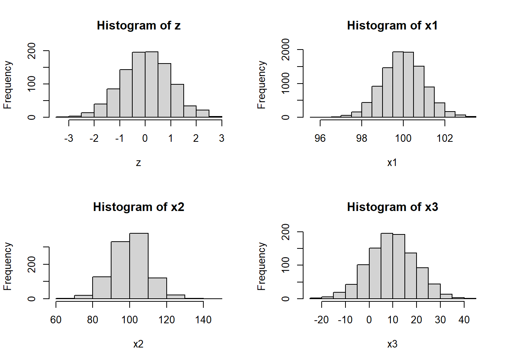
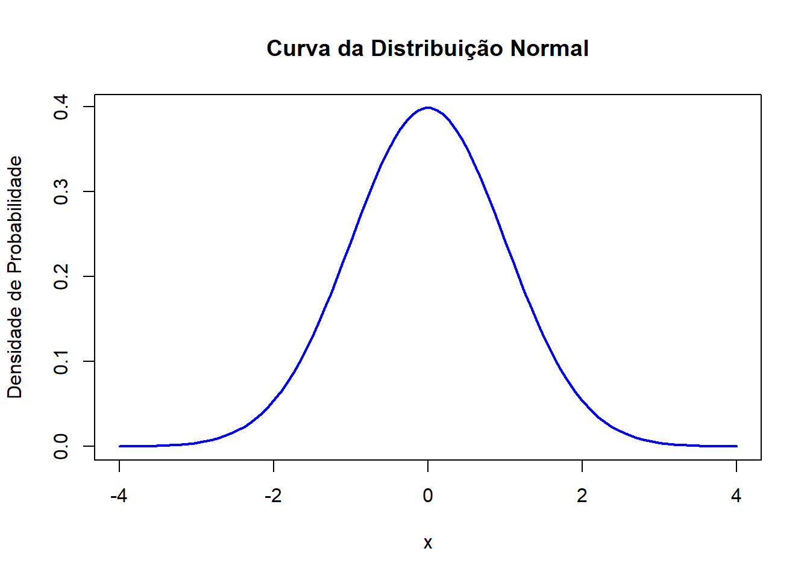

nome <- "Leonardo"
globalenv()<environment: R_GlobalEnv>ls(globalenv())[1] "nome"nome[1] "Leonardo"Ambientes (environments) em R são estruturas de dados que representam espaços onde objetos, como variáveis e funções, são associados a nomes.
Você pode pensar em um ambiente como um conjunto de nomes, sem ordem implícita.
nome ao valor Leonardo, que, por padrão, é guardada dentro do global environment.nome <- "Leonardo"
globalenv()<environment: R_GlobalEnv>ls(globalenv())[1] "nome"nome[1] "Leonardo"nome , o R vai procurar dentro desse environment um valor para devolvernew.env() ou rlang::env()e1 <- rlang::env(
a = FALSE,
b = "a",
c = 2.3,
d = 1:3,
)
novo_ambiente = new.env() # criando o ambiente
novo_ambiente$nome <- "Nascimento" #criando objeto dentro do ambiente ou
assign(nome,"Nascimento",envir = novo_ambiente ) #criando objeto dentro do ambiente
nome[1] "Leonardo"get("nome",envir = novo_ambiente)[1] "Nascimento"rlang::env_print() para mais informações sobre o ambienterlang::env_print(novo_ambiente)<environment: 0x00000128fd168bd8>
Parent: <environment: global>
Bindings:
• nome: <chr>
• Leonardo: <chr>env_names()para obter um vetor de caracteres fornecendo as ligações atuaisrlang::env_names(novo_ambiente)[1] "nome" "Leonardo"novo_ambiente.novo_ambiente$idade = 30
rlang::env_print(novo_ambiente)<environment: 0x00000128fd168bd8>
Parent: <environment: global>
Bindings:
• nome: <chr>
• Leonardo: <chr>
• idade: <dbl>O ambiente atual ou current_env()é o ambiente no qual o código está sendo executado no momento.
Quando você está experimentando de forma interativa, geralmente é o ambiente global, ou global_env()
rlang::current_env()<environment: R_GlobalEnv>identical(rlang::global_env(), rlang::current_env())[1] TRUEOutras formas de atribuições e verificações
rlang::env_poke(novo_ambiente,"professor","Estatística")
rlang::env_bind(novo_ambiente,Displina_1 = "R",Displina_1 = "AED")
rlang::env_names(novo_ambiente)[1] "nome" "Leonardo" "professor" "idade" "Displina_1"rlang::env_has(novo_ambiente, "Displina_1") # verificaçãoDisplina_1
TRUE rlang::env_has(novo_ambiente, "Displina_3")Displina_3
FALSE Todo ambiente tem um pai , outro ambiente
O pai é usado para implementar o escopo léxico: se um nome não for encontrado em um ambiente, R procurará em seu pai (e assim por diante).
Você pode definir o ambiente pai fornecendo um argumento sem nome para rlang::env(). Se você não fornecer, o padrão será o ambiente atual.
Você pode encontrar o pai de um ambiente com rlang::env_parent()
novo_ambiente$idade = 30
idadenovo_ambiente é um environment “abaixo” do global na hierarquia, e o R só estende a sua busca para environments acima .a = 1 # criando um objeto no ambiente global
get("a",envir = novo_ambiente) # buscar o objeto "a" no ambiente novo_ambiente[1] 1parent.env()parent.env(novo_ambiente)<environment: R_GlobalEnv>novo_ambiente_2 = rlang::env(novo_ambiente)
parent.env(novo_ambiente_2)<environment: 0x00000128fd168bd8>rlang::env_print(novo_ambiente_2)<environment: 0x00000128fd7b2a20>
Parent: <environment: 0x00000128fd168bd8>rlang::env_parents(novo_ambiente_2)[[1]] <env: 0x00000128fd168bd8>
[[2]] $ <env: global>Essa estrutura é muito útil na hora de utilizar funções
Apenas um ambiente não possui pai: o ambiente vazio
rlang::env_parents(novo_ambiente_2,last = rlang::empty_env()) [[1]] <env: 0x00000128fd168bd8>
[[2]] $ <env: global>
[[3]] $ <env: package:stats>
[[4]] $ <env: package:graphics>
[[5]] $ <env: package:grDevices>
[[6]] $ <env: package:datasets>
[[7]] $ <env: renv:shims>
[[8]] $ <env: package:utils>
[[9]] $ <env: package:methods>
[[10]] $ <env: Autoloads>
[[11]] $ <env: package:base>
[[12]] $ <env: empty>novo_ambiente_3 = rlang::env(rlang::empty_env())
rlang::env_parents(novo_ambiente_3)[[1]] $ <env: empty>Para cada distribuição de probabilidade existem quatro funções no R. Cada uma delas é chamada adicionando o seguinte prefixo ao nome da distribuição correspondente:
- d - para a função de massa ou densidade.
- p - para a função de distribuição (cumulativa).
- q - para quantis, ou seja, para calcular o valor correspondente para a função de distribuição cumulativa dada uma probabilidade.
- r-para gerar amostras aleatórias com a distribuição dada.
| Discrete Distribution Name | Continuous Distribution Name |
|---|---|
| Binomial (binom) | Normal (norm) |
| Negative binomial (nbinom) | Exponential (exp) |
| Geometric (geom) | Uniform (unif) |
| Poisson (pois) | Gama (gamma) |
P(X = x) = \binom{n}{x} p^x (1-p)^{n-x}
# Função dbinom() para calcular a probabilidade em uma distribuição binomial
probabilidade <- dbinom(x=4, size = 10, prob = 0.5)
print(probabilidade)[1] 0.2050781probabilidade <- pbinom(q=4, size = 10, prob = 0.5)
print(probabilidade)[1] 0.3769531N = 20
n = 1
(x = rbinom(N,n,prob = 0.5)) [1] 0 1 0 1 1 1 0 1 0 0 1 1 1 0 1 1 0 1 1 0(table(x))x
0 1
8 12 P(X = x) = \frac{e^{-\lambda} \lambda^x}{x!}
# Função dpois() para calcular a probabilidade em uma distribuição de Poisson
probabilidade <- dpois(3, lambda = 2)
print(probabilidade)[1] 0.180447probabilidade <- ppois(3, lambda = 2)
print(probabilidade)[1] 0.8571235x <- rpois(n = 10, lambda = 2)
table(x)x
0 1 2 3
1 3 5 1 f(x) = \frac{1}{\sigma \sqrt{2\pi}} e^{-\frac{1}{2} \left(\frac{x - \mu}{\sigma}\right)^2}
x é a variável aleatória,
\mu é a média da distribuição,
\sigma é o desvio padrão da distribuição.
Suponha que estamos analisando os resultados de um teste padronizado em que a pontuação média é 100 e o desvio padrão é 15. Queremos calcular a probabilidade de um aluno ter uma pontuação abaixo de 110.
# Função pnorm() para calcular a probabilidade em uma distribuição normal
probabilidade <- pnorm(110, mean = 100, sd = 15)
print(probabilidade)[1] 0.7475075probabilidade <- pnorm(120, mean = 100, sd = 15) - pnorm(110, mean = 100, sd = 15)
print(probabilidade)[1] 0.1612813probabilidade <- pnorm(120, mean = 100, sd = 15,lower.tail = F)
print(probabilidade) # ou[1] 0.09121122probabilidade <- 1-pnorm(120, mean = 100, sd = 15,lower.tail = T)
print(probabilidade)[1] 0.09121122qnorm(0.75,mean = 100,15)[1] 110.1173qnorm(0.09,mean = 100,15,lower.tail = F)[1] 120.1113z = rnorm(1000,mean = 0,sd = 1)
x1 = rnorm(10000,mean = 100,sd = 1)
x2 = rnorm(1000,mean = 100,sd = 10)
x3 = rnorm(1000,mean = 10,sd = 10)
par(mfrow=c(2,2))
hist(z);hist(x1);hist(x2);hist(x3)
# Parâmetros da distribuição normal
mu <- 0 # Média
sigma <- 1 # Desvio padrão
# Valores para o eixo x
x <- seq(-4, 4, length.out = 100)
# Calculando os valores da densidade de probabilidade para os valores de x
y <- dnorm(x, mean = mu, sd = sigma)
# Plotando a curva da distribuição normal
plot(x, y, type = "l", lwd = 2, col = "blue",
main = "Curva da Distribuição Normal",
xlab = "x", ylab = "Densidade de Probabilidade")
Pesquisar sobre as distribuições: exponencial e uniforme:
Elabore exemplos de uso dessas distribuições usando as funções em R apresentadas no exemplo da Normal
Calcule propbabilidades
Gere dessas distribuições para diferentes parâmetros
A tabela abaixo mostra uma simulação de controle de estoque para 15 dias. Reproduza a tabela. Considere:
Estoque inicial de 200
Demanda \sim Poisson(50)
Se Prob = P(Demanda>Estoque Final)>0.10, então o estoque do dia seguinte é Prob \times Estoque inicial(200) + Estoque Final do dia anterior
Se Prob = P(Demanda>Estoque Final)>0.10 e Prob \times Estoque inicial(200) + Estoque Final do dia anterior for maior que 200, então o estoque do dia seguinte é 200.
| Dia | Estoque | Demanda | Demanda não atendida | Estoque Final | P(Demanda>Estoque) |
|---|---|---|---|---|---|
| 1 | 200 | 43 | 0 | 157 | 0.0000000 |
| 2 | 157 | 41 | 0 | 116 | 0.0000000 |
| 3 | 116 | 34 | 0 | 82 | 0.0000122 |
| 4 | 82 | 36 | 0 | 46 | 0.6833224 |
| 5 | 183 | 41 | 0 | 142 | 0.0000000 |
| 6 | 142 | 59 | 0 | 83 | 0.0000072 |
| 7 | 83 | 50 | 0 | 33 | 0.9930212 |
| 8 | 200 | 54 | 0 | 146 | 0.0000000 |
| 9 | 146 | 64 | 0 | 82 | 0.0000122 |
| 10 | 82 | 60 | 0 | 22 | 0.9999929 |
| 11 | 200 | 49 | 0 | 151 | 0.0000000 |
| 12 | 151 | 47 | 0 | 104 | 0.0000000 |
| 13 | 104 | 50 | 0 | 54 | 0.2576940 |
| 14 | 106 | 51 | 0 | 55 | 0.2155296 |
| 15 | 98 | 44 | 0 | 54 | 0.2576940 |
| 16 | 106 | 0 | 0 | 0 | 0.0000000 |